Note
Click here to download the full example code
Artifact Correction with ICA¶
ICA finds directions in the feature space corresponding to projections with high non-Gaussianity. We thus obtain a decomposition into independent components, and the artifact’s contribution is typically localized in only a small number of components. These components have to be correctly identified and removed.
If EOG or ECG recordings are available, they can be used in ICA to
automatically select the corresponding artifact components from the
decomposition. To do so, you have to first build an mne.Epochs object
around blink or heartbeat events.
ICA is implemented in MNE using the mne.preprocessing.ICA class,
which we will review here.
import numpy as np
import mne
from mne.datasets import sample
from mne.preprocessing import ICA
from mne.preprocessing import create_eog_epochs, create_ecg_epochs
# getting some data ready
data_path = sample.data_path()
raw_fname = data_path + '/MEG/sample/sample_audvis_filt-0-40_raw.fif'
raw = mne.io.read_raw_fif(raw_fname, preload=True)
# 1Hz high pass is often helpful for fitting ICA (already lowpassed @ 40 Hz)
raw.filter(1., None, n_jobs=1, fir_design='firwin')
Out:
Opening raw data file /home/circleci/mne_data/MNE-sample-data/MEG/sample/sample_audvis_filt-0-40_raw.fif...
Read a total of 4 projection items:
PCA-v1 (1 x 102) idle
PCA-v2 (1 x 102) idle
PCA-v3 (1 x 102) idle
Average EEG reference (1 x 60) idle
Range : 6450 ... 48149 = 42.956 ... 320.665 secs
Ready.
Current compensation grade : 0
Reading 0 ... 41699 = 0.000 ... 277.709 secs...
Filtering raw data in 1 contiguous segment
Setting up high-pass filter at 1 Hz
l_trans_bandwidth chosen to be 1.0 Hz
Filter length of 497 samples (3.310 sec) selected
Before applying artifact correction please learn about your actual artifacts by reading Introduction to artifacts and artifact detection.
Warning
ICA is sensitive to low-frequency drifts and therefore
requires the data to be high-pass filtered prior to fitting.
Typically, a cutoff frequency of 1 Hz is recommended. Note that
FIR filters prior to MNE 0.15 used the 'firwin2' design
method, which generally produces rather shallow filters that
might not work for ICA processing. Therefore, it is recommended
to use IIR filters for MNE up to 0.14. In MNE 0.15, FIR filters
can be designed with the 'firwin' method, which generally
produces much steeper filters. This method will be the default
FIR design method in MNE 0.16. In MNE 0.15, you need to
explicitly set fir_design='firwin' to use this method. This
is the recommended filter method for ICA preprocessing.
Fit ICA¶
First, choose the ICA method. There are currently three possible choices:
fastica, picard, and infomax.
Note
The default method in MNE is FastICA, which along with Infomax is one of the most widely used ICA algorithms. Picard is a new algorithm that is expected to converge faster than FastICA and Infomax, especially when the aim is to recover accurate maps with a low tolerance parameter, see 1 for more information.
method = 'fastica'
# Choose other parameters
n_components = 25 # if float, select n_components by explained variance of PCA
decim = 3 # we need sufficient statistics, not all time points -> saves time
# we will also set state of the random number generator - ICA is a
# non-deterministic algorithm, but we want to have the same decomposition
# and the same order of components each time this tutorial is run
random_state = 23
Define the ICA object instance
ica = ICA(n_components=n_components, method=method, random_state=random_state)
print(ica)
Out:
<ICA | no decomposition, fit (fastica): samples, no dimension reduction>
we avoid fitting ICA on crazy environmental artifacts that would dominate the variance and decomposition
reject = dict(mag=5e-12, grad=4000e-13)
ica.fit(raw, picks='meg', decim=decim, reject=reject)
print(ica)
Out:
Fitting ICA to data using 305 channels (please be patient, this may take a while)
Inferring max_pca_components from picks
Rejecting epoch based on MAG : ['MEG 1711']
Artifact detected in [4242, 4343]
Rejecting epoch based on MAG : ['MEG 1711']
Artifact detected in [5858, 5959]
Selection by number: 25 components
Fitting ICA took 1.4s.
<ICA | raw data decomposition, fit (fastica): 13635 samples, 25 components, channels used: "mag"; "grad">
Plot ICA components
ica.plot_components() # can you spot some potential bad guys?
- 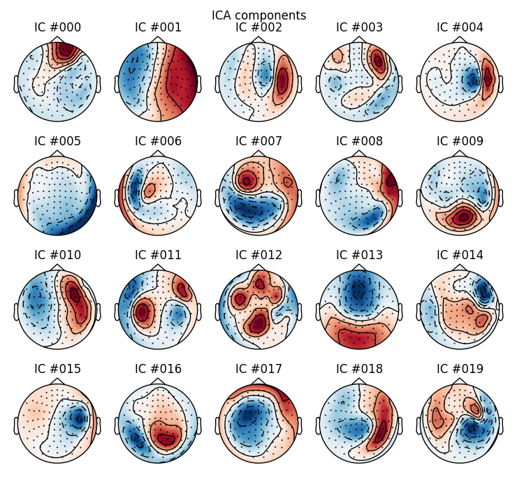
- 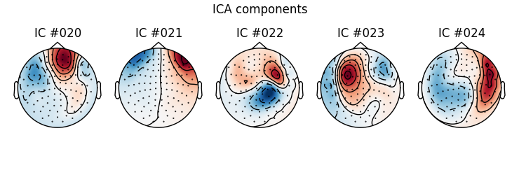
Component properties¶
Let’s take a closer look at properties of first three independent components.
# first, component 0:
ica.plot_properties(raw, picks=0)
Out:
Rejecting epoch based on MAG : ['MEG 1711']
Artifact detected in [12642, 12943]
Rejecting epoch based on MAG : ['MEG 1711']
Artifact detected in [17458, 17759]
Creating RawArray with float64 data, n_channels=376, n_times=40936
Current compensation grade : 0
Range : 0 ... 40935 = 0.000 ... 272.621 secs
Ready.
Using multitaper spectrum estimation with 7 DPSS windows
we can see that the data were filtered so the spectrum plot is not very informative, let’s change that:
ica.plot_properties(raw, picks=0, psd_args={'fmax': 35.})
Out:
Rejecting epoch based on MAG : ['MEG 1711']
Artifact detected in [12642, 12943]
Rejecting epoch based on MAG : ['MEG 1711']
Artifact detected in [17458, 17759]
Creating RawArray with float64 data, n_channels=376, n_times=40936
Current compensation grade : 0
Range : 0 ... 40935 = 0.000 ... 272.621 secs
Ready.
Using multitaper spectrum estimation with 7 DPSS windows
we can also take a look at multiple different components at once:
ica.plot_properties(raw, picks=[1, 2], psd_args={'fmax': 35.})

- 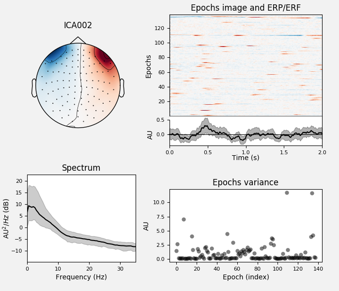
Out:
Rejecting epoch based on MAG : ['MEG 1711']
Artifact detected in [12642, 12943]
Rejecting epoch based on MAG : ['MEG 1711']
Artifact detected in [17458, 17759]
Creating RawArray with float64 data, n_channels=376, n_times=40936
Current compensation grade : 0
Range : 0 ... 40935 = 0.000 ... 272.621 secs
Ready.
Using multitaper spectrum estimation with 7 DPSS windows
Instead of opening individual figures with component properties, we can
also pass an instance of Raw or Epochs in inst argument to
ica.plot_components. This would allow us to open component properties
interactively by clicking on individual component topomaps. In the notebook
this works only when running matplotlib in interactive mode
(%matplotlib).
# uncomment the code below to test the interactive mode of plot_components:
# ica.plot_components(picks=range(10), inst=raw)
Advanced artifact detection¶
Let’s use a more efficient way to find artifacts
eog_average = create_eog_epochs(raw, reject=dict(mag=5e-12, grad=4000e-13),
picks='meg').average()
eog_epochs = create_eog_epochs(raw, reject=reject) # get single EOG trials
eog_inds, scores = ica.find_bads_eog(eog_epochs) # find via correlation
ica.plot_scores(scores, exclude=eog_inds) # look at r scores of components
# we can see that only one component is highly correlated and that this
# component got detected by our correlation analysis (red).
ica.plot_sources(eog_average, exclude=eog_inds) # look at source time course
- 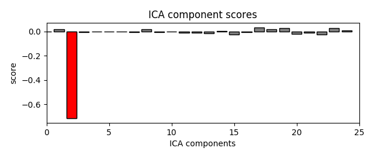
- 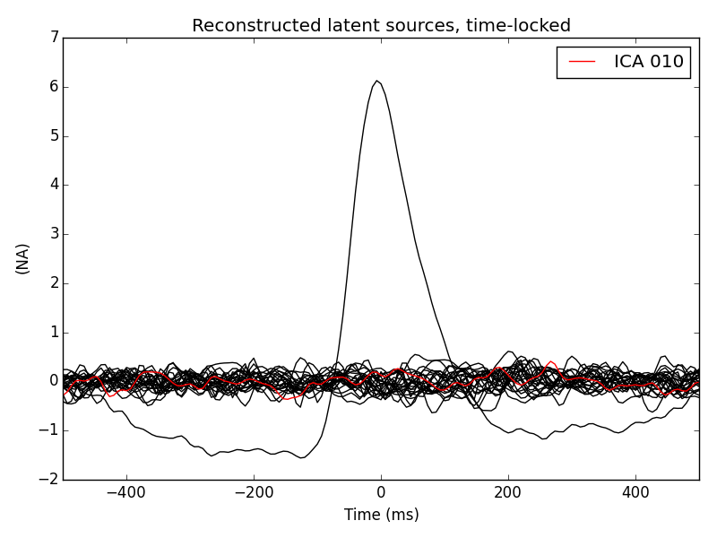
Out:
EOG channel index for this subject is: [375]
Filtering the data to remove DC offset to help distinguish blinks from saccades
Setting up band-pass filter from 2 - 45 Hz
Filter length of 2048 samples (13.639 sec) selected
Setting up band-pass filter from 1 - 10 Hz
Filter length of 2048 samples (13.639 sec) selected
Now detecting blinks and generating corresponding events
Number of EOG events detected : 46
46 matching events found
No baseline correction applied
Not setting metadata
Created an SSP operator (subspace dimension = 3)
Loading data for 46 events and 151 original time points ...
0 bad epochs dropped
EOG channel index for this subject is: [375]
Filtering the data to remove DC offset to help distinguish blinks from saccades
Setting up band-pass filter from 2 - 45 Hz
Filter length of 2048 samples (13.639 sec) selected
Setting up band-pass filter from 1 - 10 Hz
Filter length of 2048 samples (13.639 sec) selected
Now detecting blinks and generating corresponding events
Number of EOG events detected : 46
46 matching events found
No baseline correction applied
Not setting metadata
Created an SSP operator (subspace dimension = 4)
Loading data for 46 events and 151 original time points ...
0 bad epochs dropped
We can take a look at the properties of that component, now using the data epoched with respect to EOG events. We will also use a little bit of smoothing along the trials axis in the epochs image:
ica.plot_properties(eog_epochs, picks=eog_inds, psd_args={'fmax': 35.},
image_args={'sigma': 1.})
Out:
Using multitaper spectrum estimation with 7 DPSS windows
That component is showing a prototypical average vertical EOG time course.
Pay attention to the labels, a customized read-out of the
mne.preprocessing.ICA.labels_:
print(ica.labels_)
Out:
{'eog/0/EOG 061': [2], 'eog': [2]}
These labels were used by the plotters and are added automatically by artifact detection functions. You can also manually edit them to annotate components.
Now let’s see how we would modify our signals if we removed this component from the data.
ica.plot_overlay(eog_average, exclude=eog_inds, show=False)
# red -> before, black -> after. Yes! We remove quite a lot!
# to definitely register this component as a bad one to be removed
# there is the ``ica.exclude`` attribute, a simple Python list
ica.exclude.extend(eog_inds)
# from now on the ICA will reject this component even if no exclude
# parameter is passed, and this information will be stored to disk
# on saving
# uncomment this for reading and writing
# ica.save('my-ica.fif')
# ica = read_ica('my-ica.fif')
Out:
Transforming to ICA space (25 components)
Zeroing out 1 ICA components
Note that nothing is yet removed from the raw data. To remove the effects of
the rejected components,
the apply method must be called.
Here we apply it on the copy of the first ten seconds, so that the rest of
this tutorial still works as intended.
raw_copy = raw.copy().crop(0, 10)
ica.apply(raw_copy)
raw_copy.plot() # check the result
Out:
Transforming to ICA space (25 components)
Zeroing out 1 ICA components
Exercise: find and remove ECG artifacts using ICA!
ecg_epochs = create_ecg_epochs(raw, tmin=-.5, tmax=.5)
ecg_inds, scores = ica.find_bads_ecg(ecg_epochs, method='ctps')
ica.plot_properties(ecg_epochs, picks=ecg_inds, psd_args={'fmax': 35.})
- 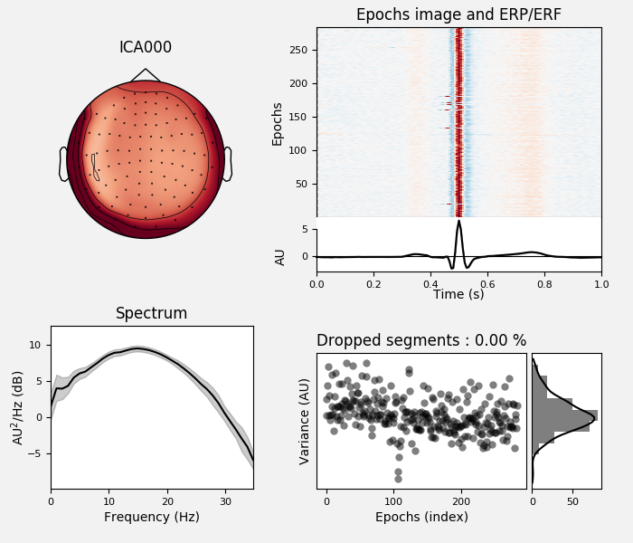
- 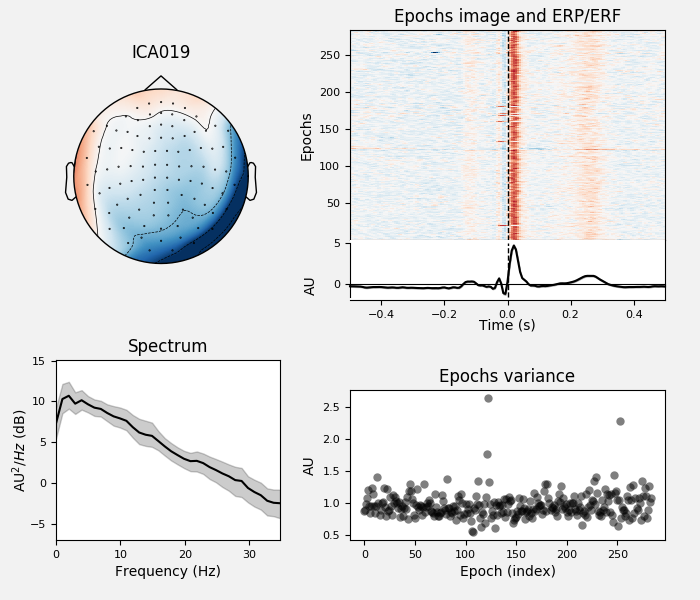
- 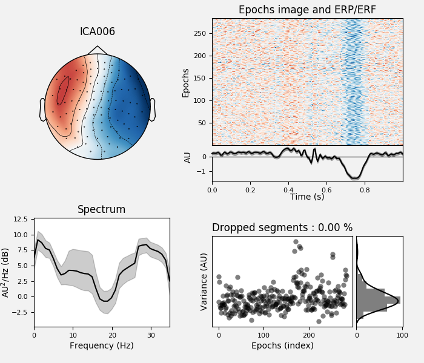
Out:
Reconstructing ECG signal from Magnetometers
Setting up band-pass filter from 8 - 16 Hz
Filter length of 2048 samples (13.639 sec) selected
Filter length of 2048 samples (13.639 sec) selected
Number of ECG events detected : 284 (average pulse 61 / min.)
284 matching events found
No baseline correction applied
Not setting metadata
Created an SSP operator (subspace dimension = 4)
Loading data for 284 events and 151 original time points ...
0 bad epochs dropped
Reconstructing ECG signal from Magnetometers
Using multitaper spectrum estimation with 7 DPSS windows
What if we don’t have an EOG channel?¶
We could either:
make a bipolar reference from frontal EEG sensors and use as virtual EOG channel. This can be tricky though as you can only hope that the frontal EEG channels only reflect EOG and not brain dynamics in the prefrontal cortex.
go for a semi-automated approach, using template matching.
In MNE-Python option 2 is easily achievable and it might give better results, so let’s have a look at it.
from mne.preprocessing.ica import corrmap # noqa
The idea behind corrmap is that artifact patterns are similar across subjects
and can thus be identified by correlating the different patterns resulting
from each solution with a template. The procedure is therefore
semi-automatic. mne.preprocessing.corrmap() hence takes a list of
ICA solutions and a template, that can be an index or an array.
As we don’t have different subjects or runs available today, here we will simulate ICA solutions from different subjects by fitting ICA models to different parts of the same recording. Then we will use one of the components from our original ICA as a template in order to detect sufficiently similar components in the simulated ICAs.
The following block of code simulates having ICA solutions from different runs/subjects so it should not be used in real analysis - use independent data sets instead.
# We'll start by simulating a group of subjects or runs from a subject
start, stop = [0, raw.times[-1]]
intervals = np.linspace(start, stop, 4, dtype=np.float)
icas_from_other_data = list()
raw.pick_types(meg=True, eeg=False) # take only MEG channels
for ii, start in enumerate(intervals):
if ii + 1 < len(intervals):
stop = intervals[ii + 1]
print('fitting ICA from {0} to {1} seconds'.format(start, stop))
this_ica = ICA(n_components=n_components, method=method).fit(
raw, start=start, stop=stop, reject=reject)
icas_from_other_data.append(this_ica)
Out:
fitting ICA from 0.0 to 92.56956214990684 seconds
Fitting ICA to data using 305 channels (please be patient, this may take a while)
Inferring max_pca_components from picks
Rejecting epoch based on MAG : ['MEG 1711']
Artifact detected in [12642, 12943]
Selection by number: 25 components
Fitting ICA took 1.1s.
fitting ICA from 92.56956214990684 to 185.1391242998137 seconds
Fitting ICA to data using 305 channels (please be patient, this may take a while)
Inferring max_pca_components from picks
Rejecting epoch based on MAG : ['MEG 1711']
Artifact detected in [3612, 3913]
Selection by number: 25 components
Fitting ICA took 1.1s.
fitting ICA from 185.1391242998137 to 277.7086864497205 seconds
Fitting ICA to data using 305 channels (please be patient, this may take a while)
Inferring max_pca_components from picks
Rejecting epoch based on MAG : ['MEG 1411']
Artifact detected in [12341, 12642]
Selection by number: 25 components
Fitting ICA took 1.0s.
Remember, don’t do this at home! Start by reading in a collection of ICA solutions instead. Something like:
icas = [mne.preprocessing.read_ica(fname) for fname in ica_fnames]
print(icas_from_other_data)
Out:
[<ICA | raw data decomposition, fit (fastica): 13545 samples, 25 components, channels used: "mag"; "grad">, <ICA | raw data decomposition, fit (fastica): 13545 samples, 25 components, channels used: "mag"; "grad">, <ICA | raw data decomposition, fit (fastica): 13545 samples, 25 components, channels used: "mag"; "grad">]
We use our original ICA as reference.
reference_ica = ica
Investigate our reference ICA:
reference_ica.plot_components()
- 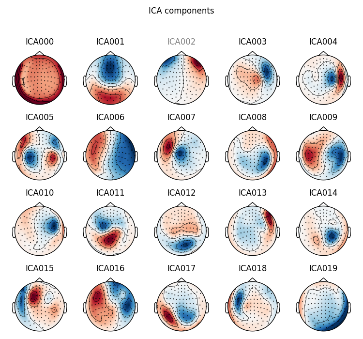
- 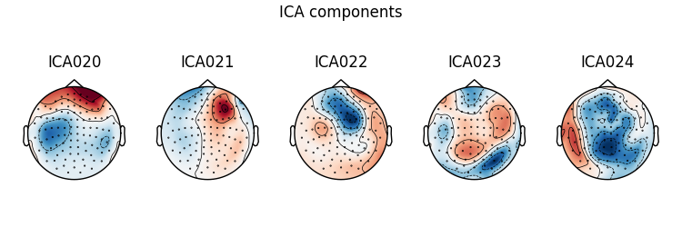
Which one is the bad EOG component? Here we rely on our previous detection algorithm. You would need to decide yourself if no automatic detection was available.
reference_ica.plot_sources(eog_average, exclude=eog_inds)

Indeed it looks like an EOG, also in the average time course.
We construct a list where our reference run is the first element. Then we
can detect similar components from the other runs (the other ICA objects)
using mne.preprocessing.corrmap(). So our template must be a tuple like
(reference_run_index, component_index):
icas = [reference_ica] + icas_from_other_data
template = (0, eog_inds[0])
Now we can run the CORRMAP algorithm.
fig_template, fig_detected = corrmap(icas, template=template, label="blinks",
show=True, threshold=.8, ch_type='mag')
- 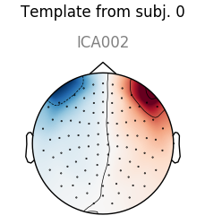
- 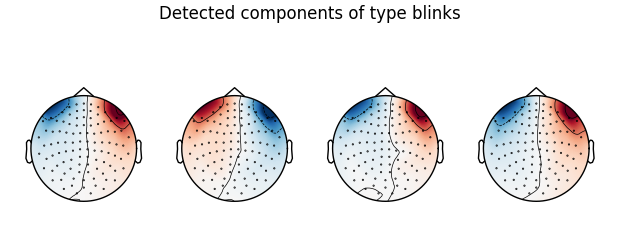
Out:
Median correlation with constructed map: 0.996
Displaying selected ICs per subject.
At least 1 IC detected for each subject.
Nice, we have found similar ICs from the other (simulated) runs!
In this way, you can detect a type of artifact semi-automatically for example
for all subjects in a study.
The detected template can also be retrieved as an array and stored; this
array can be used as an alternative template to
mne.preprocessing.corrmap().
eog_component = reference_ica.get_components()[:, eog_inds[0]]
If you calculate a new ICA solution, you can provide this array instead of specifying the template in reference to the list of ICA objects you want to run CORRMAP on. (Of course, the retrieved component map arrays can also be used for other purposes than artifact correction.)
You can also use SSP to correct for artifacts. It is a bit simpler and faster but also less precise than ICA and requires that you know the event timing of your artifact. See Artifact Correction with SSP.